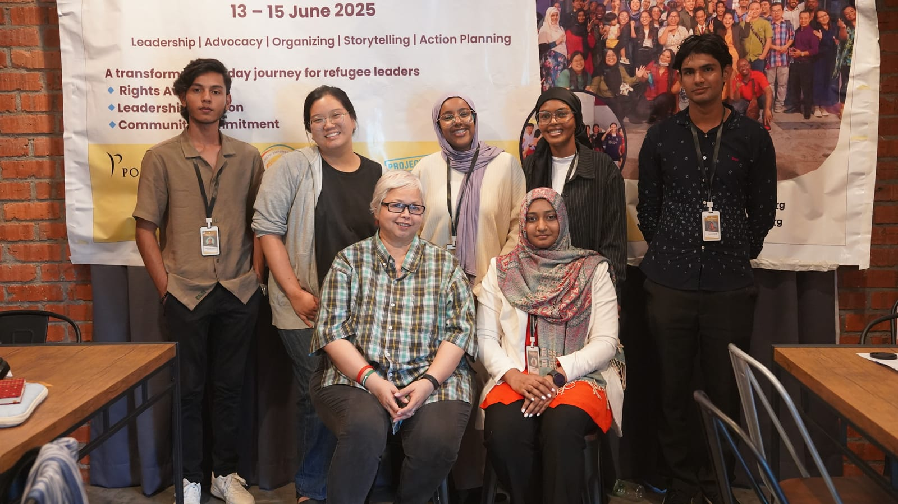
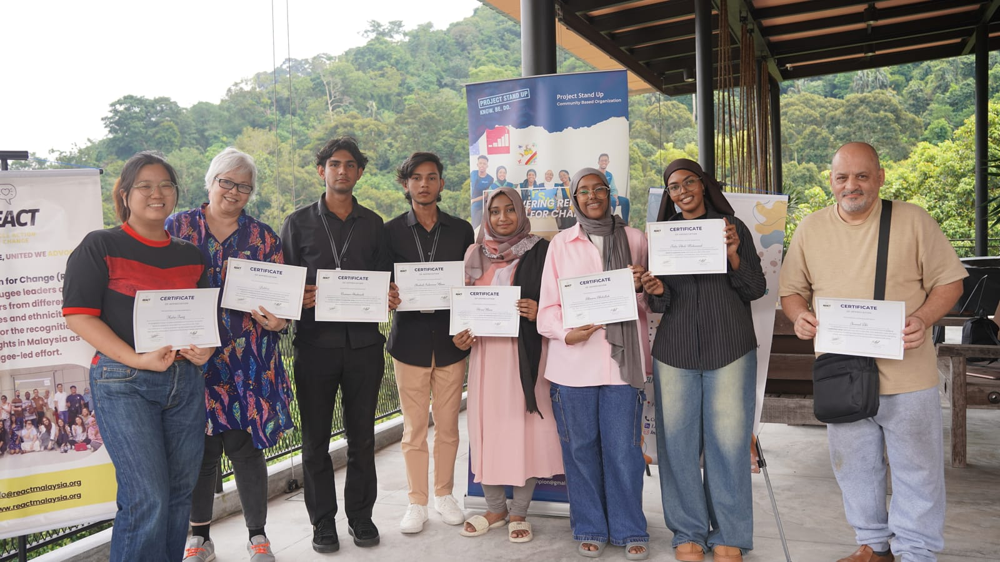
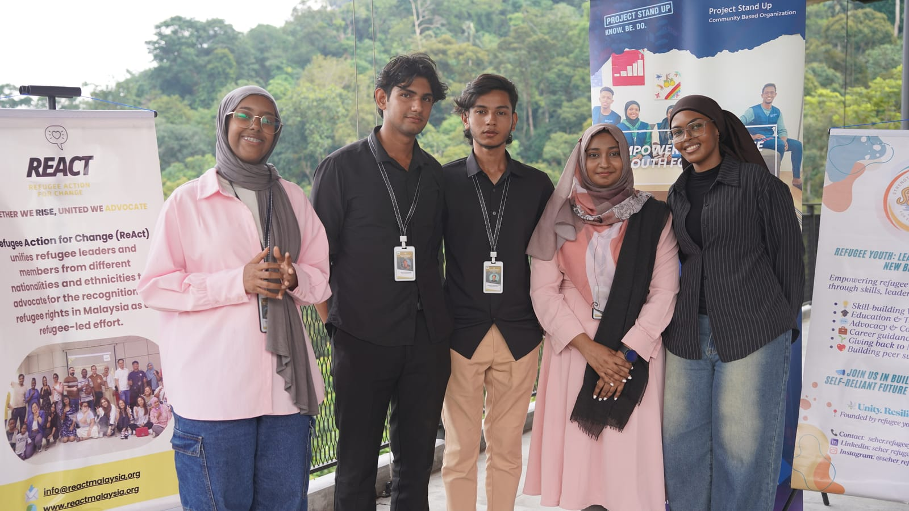
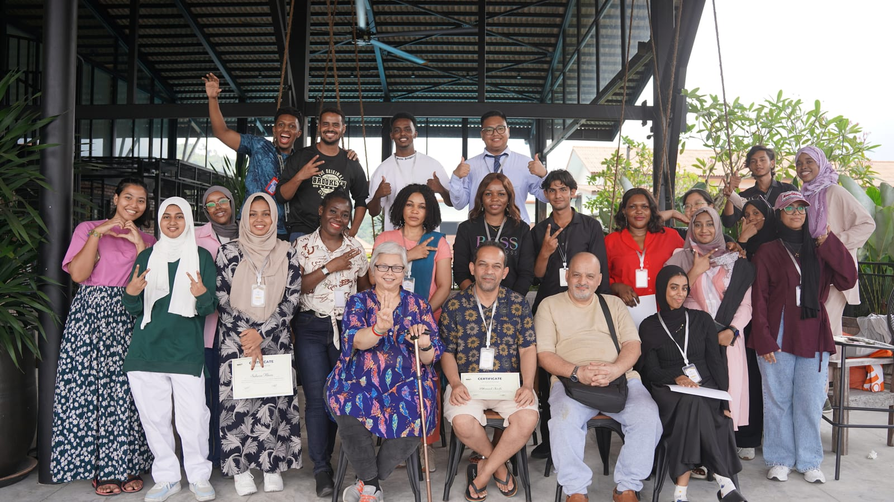
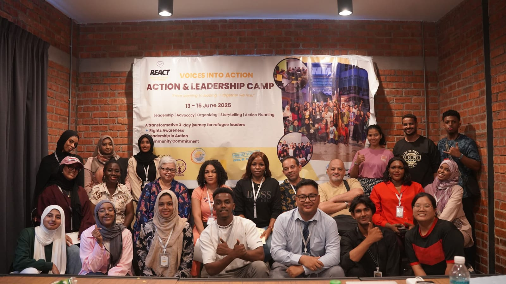

Education & Capacity Building
Connecting youth to scholarships, skills workshops, and career counselling so they can make informed choices about their future.
What We Do
The everyday work we do for refugee youth, the projects we've already delivered, and what's on the horizon. This page grows with every step we take.
Our Programs
Practical initiatives that meet youth where they are — and help them move forward.
Connecting youth to scholarships, skills workshops, and career counselling so they can make informed choices about their future.
A safe space to share, community events to connect, and encouragement to take active roles in decision-making.
Raising awareness of refugee rights, amplifying youth voices, and building stronger relationships with stakeholders.
Mental-health support through counselling and peer discussion, medical case management, and safe, legal job pathways.
The dignity of labour. Youth give back through cleaning, beautification and community-service projects — showing their positive contribution to society.
Our Projects
Every project is a step toward a brighter dawn. Here's where it begins — and we'll add each new one as it happens.
"Seen" is SEHER's signature series of experiences created to help refugee youth feel seen, heard, and valued. Through honest connection, reflection, and joy, "Seen" rebuilds confidence, nurtures trust, and reminds young people that they are so much more than their circumstances.
Presence over performance · Dignity over pity · Connection over isolation
Small, regular gatherings for connection, sharing, and confidence: a safe space to slow down and be present.
An immersive, multi-day experience with guest mentors for a small, selected group: our deepest journey of confidence, trust, and belonging. Coming late 2026.
The series keeps growing, with workshops, creative sessions, and community days all gathering under the "Seen" banner.
One of SEHER's early milestones. Our founder Areej designed and led this first-of-its-kind camp, created for and by refugee youth, delivered in collaboration with ReAct and with the support of Porticus and Project Stand Up (PSU).





Over three days, young people from Yemen, Somalia, Pakistan, Cameroon, Iran, Myanmar, Liberia, Nigeria and beyond didn't just learn advocacy — they practised it. They turned their own lived experiences into strategy and built real campaigns on the issues that affect them most: education, healthcare access, and the right to work.
Sessions like "Turning Story into Strategy," led by veteran advocate Debbie Stothard, helped participants step into leadership and trust their own voices.
"Being a refugee does not take away our voice — it shapes our courage. We are not just survivors of the system; we are architects of a better one." — Areej Khan, Founder of SEHER